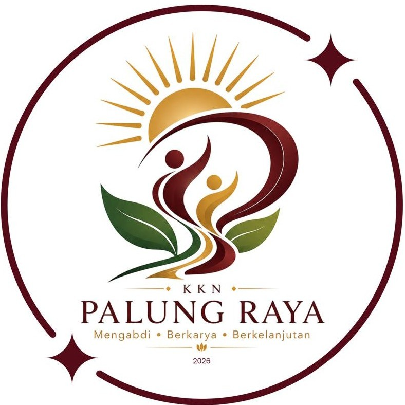
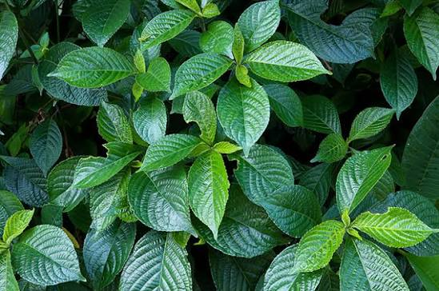

Kandungan Utama
- Flavonoid
- Tanin
- Polifenol
- Kalium
- Katekin
- Saponin
- Serat alami
- Antioksidan alami


Nama Ilmiah : Strobilanthes crispus (L.) Blume
Keji beling merupakan salah satu tanaman obat keluarga (TOGA) yang telah lama dimanfaatkan dalam pengobatan tradisional di Indonesia. Tanaman ini dikenal dengan daunnya yang bergerigi dan sedikit kasar. Keji beling mengandung berbagai senyawa aktif yang dipercaya bermanfaat untuk membantu menjaga kesehatan ginjal, saluran kemih, serta mendukung proses pengeluaran urine secara alami.
Keji beling dikenal sebagai salah satu tanaman herbal yang memiliki berbagai manfaat bagi kesehatan. Secara tradisional, tanaman ini dipercaya membantu meluruhkan batu ginjal dan batu saluran kemih, melancarkan buang air kecil karena memiliki sifat diuretik, serta membantu menjaga fungsi ginjal. Kandungan flavonoid dan polifenol pada daun keji beling juga berperan sebagai antioksidan yang membantu melindungi sel-sel tubuh dari kerusakan akibat radikal bebas. Selain itu, tanaman ini dipercaya membantu mengurangi pembengkakan, membantu menurunkan kadar asam urat, menjaga kesehatan saluran kemih, dan mendukung kesehatan tubuh secara keseluruhan apabila dikonsumsi sebagai bagian dari pola hidup sehat.
Keji beling merupakan tanaman herbal yang digunakan secara tradisional dan tidak menggantikan pengobatan medis. Konsumsi sebaiknya dalam jumlah yang wajar. Bagi penderita penyakit ginjal berat, ibu hamil, ibu menyusui, atau seseorang yang sedang menjalani pengobatan tertentu, disarankan berkonsultasi dengan tenaga kesehatan sebelum mengonsumsi rebusan daun keji beling secara rutin.